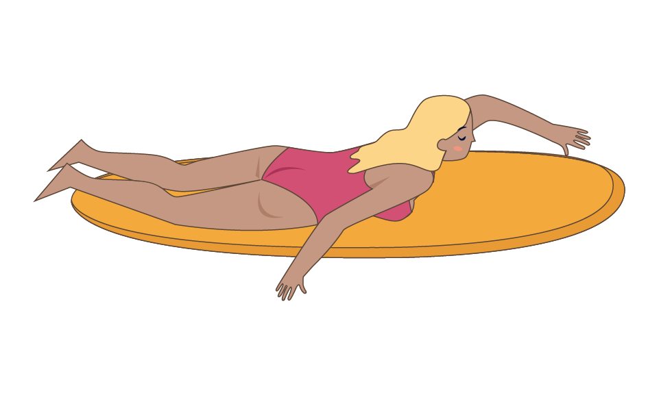
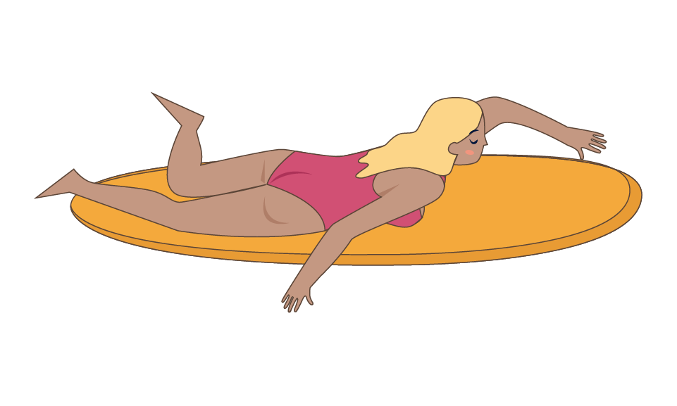

← Retour

La rame
La rame est un élément essentiel du surf. Mieux ramer c'est prendre plus de vagues et profiter à fond de ses sessions.
Le bon positionnement
- Le contenu est en cours de création.
Un mouvement de bras continu
- Le contenu est en cours de création.
À éviter
- Il faut éviter d'avoir les jambes pliées ou écartées.
- Sauf si vous battez des pieds pour rentrer dans une vague par exemple.
Quelques liens
Tuto takeoff de l'ucpa
Tuto de Stephanie Gilmore